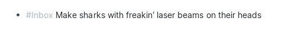
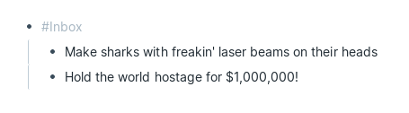
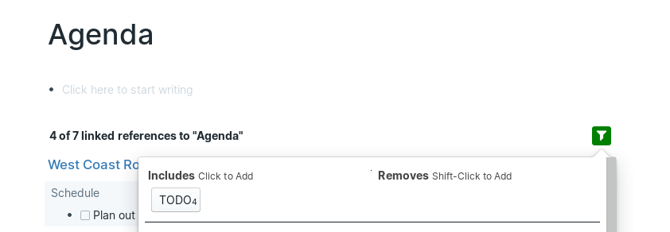
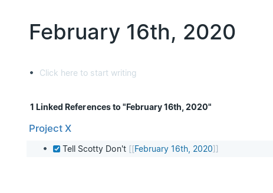
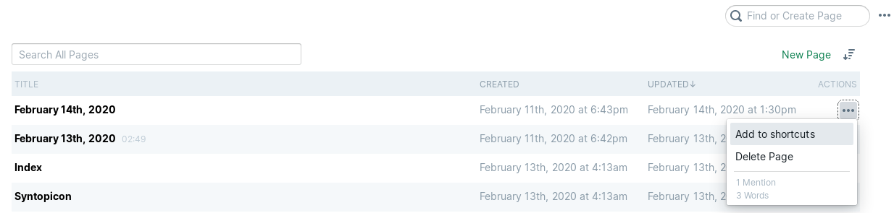
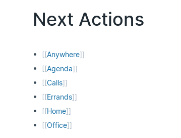
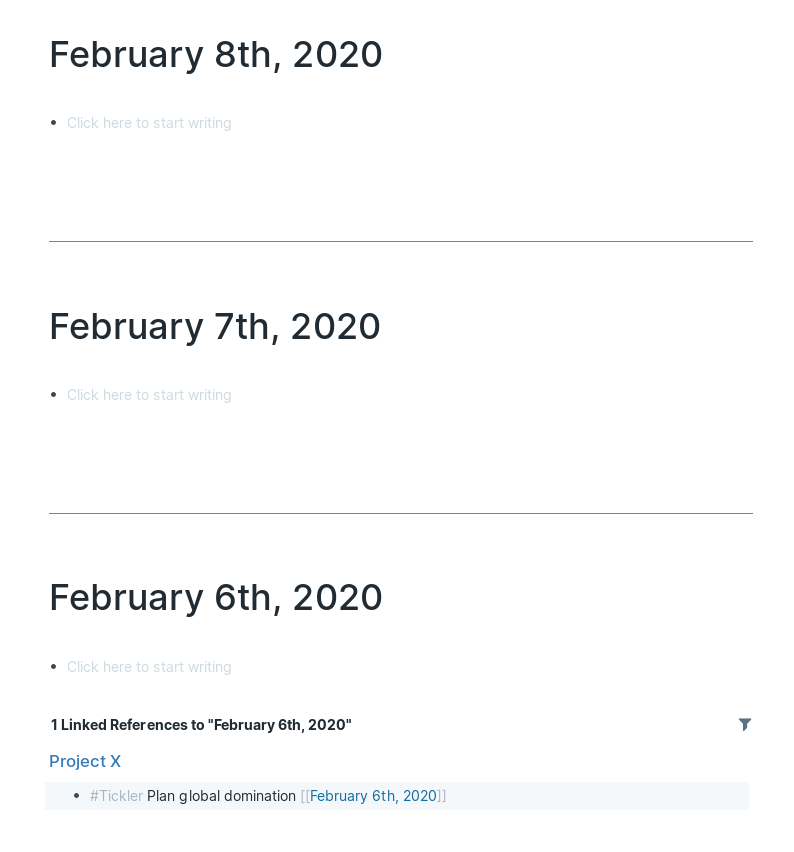
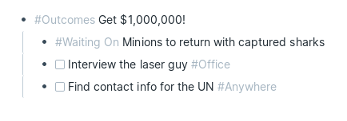
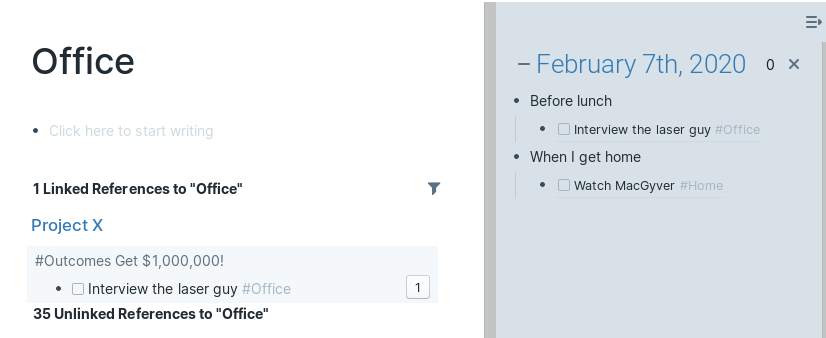

Update May 6, 2022: Now I’m using Todoist for GTD.
Update Oct 21, 2021: I have switched to Nirvana HQ for GTD.
Update Nov 14, 2020: After some experimentation I returned to using Trello for GTD. Roam is well
suited for learning and deep work, but not for juggling a lot of small actions. In particular,
clarifying/organizing tasks on Roam mobile was painful due to its slow startup and text based input. (Trello on
the other hand is fast to start and has dropdowns for moving actions to different lists.) Roam may be better
paired with another task management system. Feel free to still read the below as inspiration for your own Roam
workflows.
Roam Research is a great note-taking app where each note page tracks its linked and unlinked references. Even without
explicitly linking pages Roam will create connections and help you manage your disparate thoughts.
When I was reading through the Welcome to Roam
documentation I came across notes on how to set up Getting
Things Done in Roam. It was a good starting point, but it doesn't use GTD Contexts to narrow down
Next Actions and relies a lot on drag-and-drop to move actions around. Both of these factors limit the total
number of tasks that can be managed without getting overloaded and make it harder to do GTD on a phone.
So I’ve come up with a system that uses Roam’s linked references to gather tasks by their context
tag, and let me move tasks around without leaving the keyboard.
Capturing
Instead of a specific Bucket page for adding new ideas, I write ideas down wherever I am, along with an #Inbox
tag. This has the nice effect of keeping the idea on the page where I first thought of it (and where it’s
surrounded by related information). This could be a project page or the Daily Note. Putting new task ideas on
the Daily Note page actually makes it possible to track the time between thinking of it and completing it.

Sometimes I save a bit of typing by adding multiple ideas under an #Inbox block. Roam will link the
whole thing to the Inbox page.

Clarifying/Organizing
To remind myself of all my non-Roam (a.k.a. satellite) inboxes I have a list of them on the
Inbox page. Places like my personal and work emails, my night table, or my desk. I also added
orphaned blocks using Roam’s /Find orphan blocks command. (The picture of balloons by ian dooley is there to make processing my Inbox during a Daily
Review a bit more fun!)
I start my Daily Review by going to the Inbox page, reviewing each linked reference in order,
and asking myself GTD’s clarifying questions:
- What is it?
- What’s the desired outcome?
- What’s the next action(s)?
With the answers to these questions I deal with it in one of the following ways:
- Do It if it takes <2 minutes
- Delegate It if someone else is handling it. In which case I’ll tag their name and
#Waiting On
- Defer It if it’s for a later time.
- Either by creating a calendar event (outside of Roam)
- Creating a phone reminder (if it’s something I need to do at a specific time)
- Tagging #Tickler and a future date using /Date Picker if it’s something I
want to sort at a later time
- Or tagging it with related topics and #Someday/Maybe
- Tidy It by creating Next Action(s), #Outcomes, or keeping it somewhere as
reference
- Trash It if it’s not necessary anymore
Next Actions
To next actions I add a checkbox (using Ctrl + Enter), tags for related topics, and a GTD
context tag like:
- #Anywhere
- #[[Someone’s Name]] and #Agenda
- #Calls
- #Errands
- #Home
- #Office
Roam linked references can be filtered (and Roam will even remember filters across browsers and sessions). So for
each of these context pages, I’ve set up filters to only show linked references that are
TODOs.

I like to complete actions by tagging the current day (using the /Today command) and then checking it
off. This adds it to the Daily Note where I journal about what I did during the day.

Roam Shortcuts
Roam’s left sidebar has space for a list of shortcuts. I added the following to make all parts of the GTD
workflow easily accessible:
- Inbox
- Next Actions
- Outcomes
- Someday/Maybe
I try to keep this list short because scrolling is limited on mobile. On a desktop computer shortcuts can be
added by going to All Pages, finding the context page, clicking … (in the
ACTIONS column), and then Add to shortcuts.

On the Next Actions page I have a list of different contexts. If you have only a few contexts,
go ahead and add them to the shortcuts on the left sidebar.

Deferring Actions with #Tickler and #Waiting
On
The original version of GTD had physical folders for each day of the month, each month of the year, and then
future years as needed. When using a digital Tickler like Roam, I prefer to skip the folders for months and
years and just tag future dates directly (using the /Date Picker command). It helps that Roam will
automatically turn those future dates into a Daily Note when the date comes about.
I used to worry that I might miss a #Tickler or #Waiting On task, if I didn't open Roam
every day. But Roam makes it easy to scroll down on the Daily Notes page and see past Daily Notes. To help me
remember to do this, I added a reminder to my Daily Review instructions.
If I scroll down I’ll either see blank notes with linked references to #Tickler or #Waiting
On tasks that I missed or I’ll see the last Daily Note where I wrote a journal entry. Once I see that
last journal entry I’ll know that I won’t need to look any further back.

Projects/Outcomes
“Projects” are what GTD calls any short term goal that takes multiple actions (typically in different
contexts). This confused me until I read this article by Laura Earnest. In Roam, I
avoid using the term project and instead handle multiple steps by creating an #Outcomes block
describing what I want to achieve and listing next actions beneath it.

Plans
I have a page with a copy of the Natural Planning Model that I’ll consult when planning
long term projects:
- Define purpose and principles – Why are you doing this? What are the constraints?
- Visualise outcomes – What does success look like? How about wild success?
- Brainstorm – What are all the ideas you can think of? Get the bad ones out of your head too.
- Organise – What ideas will you use? Which are the most important? What order will you do them in?
- Identify next actions – What is the very next physical action you can take to progress the project?
I also have a page for GTD Horizons. This is the only GTD list where I keep notes on the page
itself, rather than use Roam’s' linked references. This is fine since Horizon planning is very structured
and Horizon items change infrequently.
- Horizon 5: Purpose and principles – The purpose, mission and values at the heart of your existence;
- Horizon 4: Vision – A broad overview of what success looks like for you on a 3 – 5 years timeline;
- Horizon 3: Goals – The larger outcomes you’d like to make manifest in the next 1 – 2 years;
- Horizon 2: Areas of Focus and Accountability – The roles and areas of life your committed to focussing
on in the next 12 months;
- Horizon 1: Current projects – The list of any outcome you are committed to realising in < 12 months;
and
- Ground: Current actions – The comprehensive action list at the core of getting things done.
Reference
This is the easiest part of GTD to handle in Roam. Roam’s reference linking will naturally bring notes back
up when they're written about again. When I’m writing I just try to maintain consistent terminology
and let Roam do its thing.
Reviews
I start my Daily Reviews on the Inbox page. Clarifying and organizing what Roam has linked, and
then looking through my list of satellite inboxes. Then I’ll go to the Daily Notes page
(using Alt + D) and scroll down to see if I missed any #Tickler or #Waiting
On tasks. I could also go to the Tickler or Waiting On pages directly
but these lists can get long (for me at least) and Roam has no way of sorting by date. Plus I use Roam
frequently enough that I have yet to need to scroll far. Finally, I’ll plan my day by reading through my
Next Actions, and adding block references in the Daily Note I open in the right sidebar.

Once a week, in addition to the usual Daily Review, I’ll also review my Outcomes, Someday/Maybe,
and Horizons pages to see if there’s anything that I now want to tackle.
Once a year I’ll also review a summary
of GTD, compare it to my GTD page in Roam, and think about where my system can be improved.
And that’s how to do GTD with Roam’s linked references and filtering!